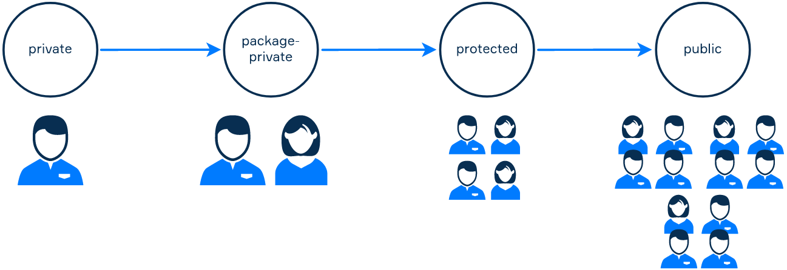
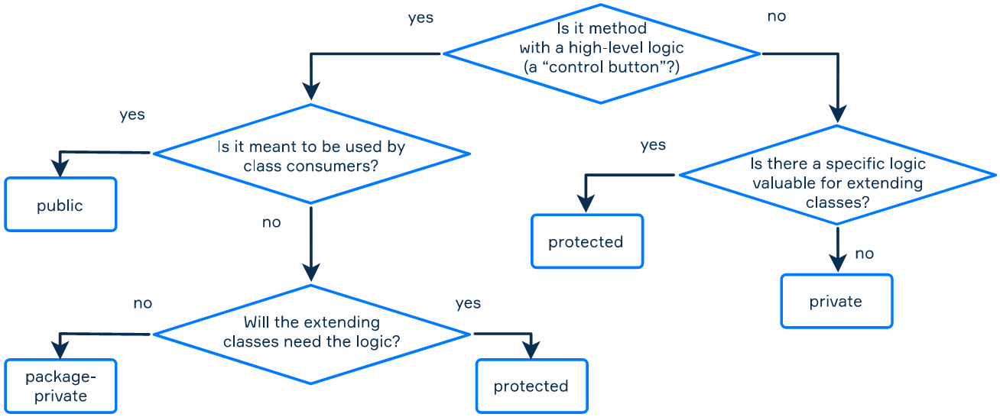

As you may remember, an access modifier describes who can use your piece of code. There are 4 of them in Java:
private: available only for the class itself;default: available for classes from the same package (= package-private);protected: available for classes from the same package and the extending classes.public: available from everywhere;We've already considered most of them, but there's the most interesting one left: the protected
access modifier. Let's place it among the modifiers you already know:

This modifier determines that only subclasses and any classes from the same package can use a class member. A
top-level class, which is a non-nested independent class defined in a .java file, can't be protected,
but an inner one can be declared this way. This is where the importance of a proper package decomposition comes in.
Now let's discuss the difference between protected and its scale neighbors, private and
"package-private" (default).
You can think of classes from the same package as the neighbors and subclasses as the children of a
particular class. There are some things you can share or do with your neighbors, for example, discuss a maintenance
plan or share the basement. These things and actions would be package-private (default).
There are also things you can do for children and close friends, like borrow some money or go for a walk in a park on
Sunday. These things will be protected.
This distinction is even easier: if a variable, a method, or an inner class is used only by the
class itself, then it is private, otherwise, it is protected. Following the main rule:
If you're not sure whether the method is useful for other classes, it’s better to first make it private and expand its availability later if needed.
Now let's see how all of this works in practice. In the example below, the package
org.aumanet.bluetooth has three classes: Laptop, SmartPhone, and SmartWatch.
All the gadgets in the package can be connected via Bluetooth. Laptop has a method
receiveInfo(), responsible for getting any information from connected gadgets.
package org.aumanet.bluetooth;
public class Laptop {
private String info;
void receiveInfo(String info) {
this.info = info;
}
}The Laptop class has only a single field info which is not directly accessible since it is
declared as private. But all classes from the same package can access it invoking the receiveInfo
method which is declared as package-private (no modifier).
We consider that SmartPhone and SmartWatch classes extend the same
MobileGadget class with the printNotification method:
package org.aumanet.bluetooth;
public class MobileGadget {
protected void printNotification(String data) {
System.out.println(data);
}
}The printNotification method is accessible for all subclasses of this class as well as for all classes
in the same package (including the Laptop class).
The SmartPhone class can access the receiveInfo method of the Laptop class and
the printNotification method of the MobileGadget class.
package org.aumanet.bluetooth;
public class SmartPhone extends MobileGadget {
private Laptop connectedLaptop;
public SmartPhone() {
this.connectedLaptop = new Laptop();
}
private void sendInfoToLaptop(String data) {
printNotification("Sending data to laptop : " + data);
connectedLaptop.receiveInfo(data);
}
}The SmartWatch class has a private method countHeartRate, which is not available from other
classes (even from a “brother” class SmartPhone). It also uses the Laptop's method of
receiving data and a parent's method to print the notification:
package org.aumanet.bluetooth;
public class SmartWatch extends MobileGadget {
private int avgHeartRate;
private Laptop connectedLaptop;
public SmartWatch() {
this.avgHeartRate = 75;
this.connectedLaptop = new Laptop();
}
private int countHeartRate() {
System.out.println("Counting heart rate");
return avgHeartRate;
}
private void sendInfoToLaptop(String data) {
printNotification("Sending data to laptop : " + data);
connectedLaptop.receiveInfo(data);
}
}We hope all modifiers are clear now!
Now, it's time to put all the access modifiers together:

The scheme is the same as it was earlier, but the questions now are specified with regard to inheritance.
In this topic, you learned about the protected access modifier, its position among the other access
modifiers, and how it differs from the private and "package-private" (default)
modifiers. We also saw how the modifiers work in an example and how to choose between them. Now, it's time to
practice!